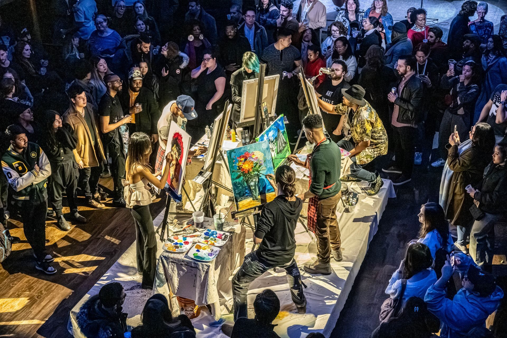
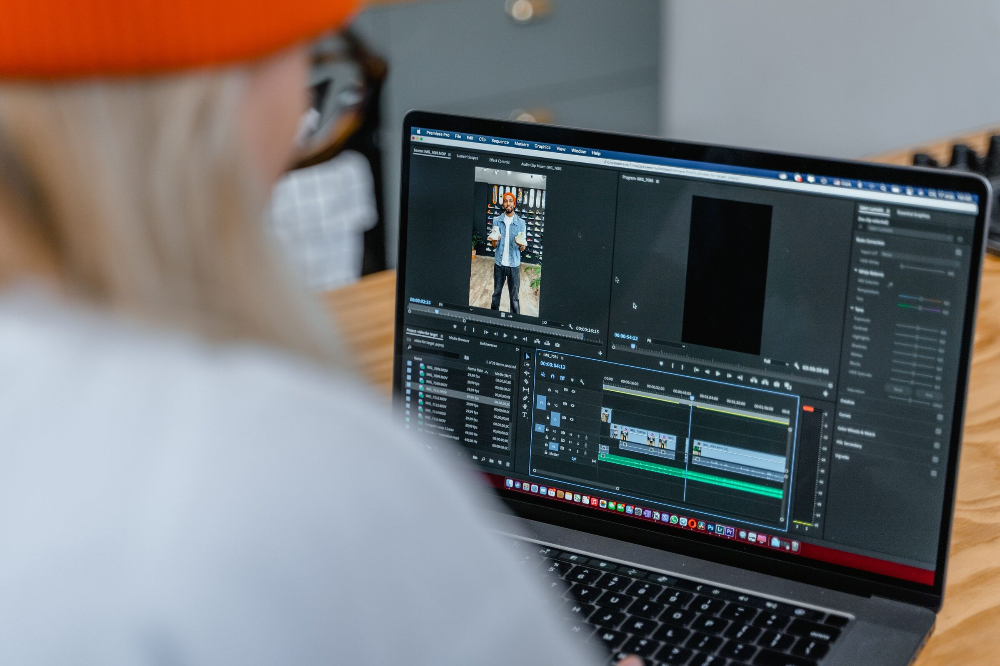
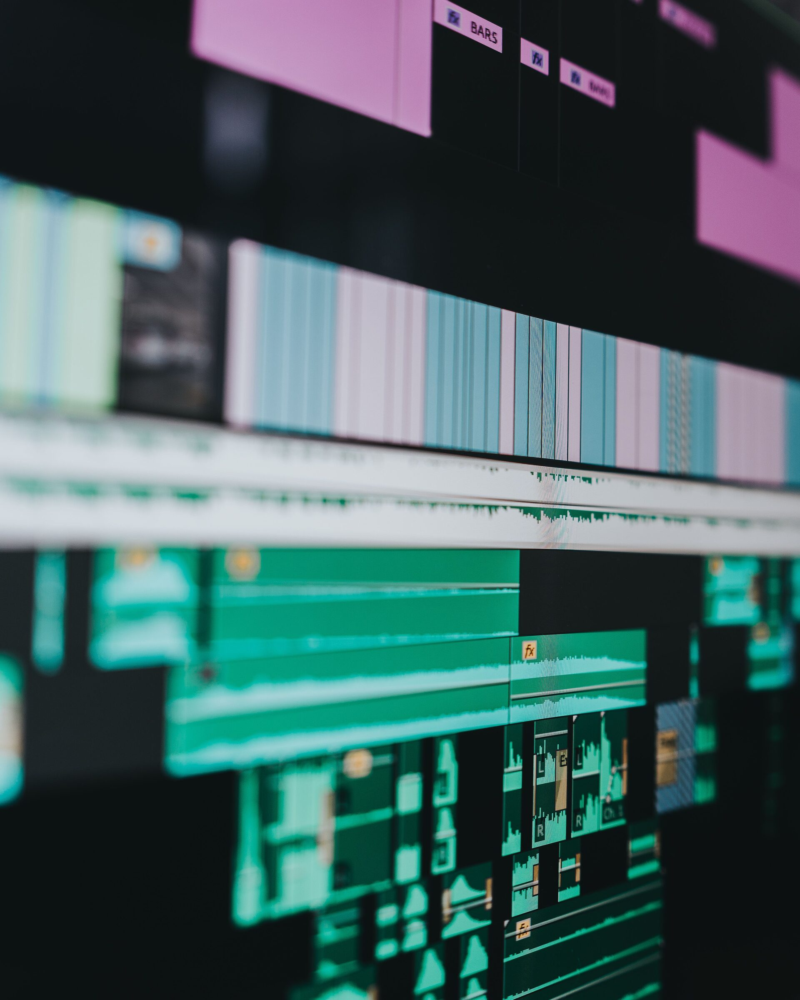
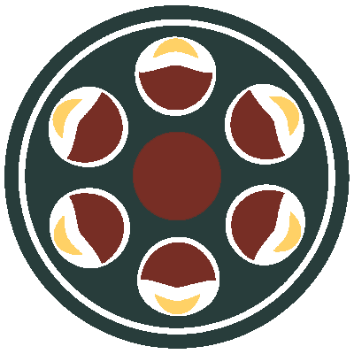

Every project is built with the same primitives.


The burden of the infinite project,
lifted.
The endless folders, the lost takes, the missing metadata — managed, mapped, and silently understood. MAIE absorbs the heavy lifting, so you can get back to why you fell in love with the craft in the first place.
Built to Be Trusted
Nothing gets lost in the shuffle. MAIE quietly recognizes every file you bring in, keeps track of every edit, and never lets a duplicate slip through.
Every project lives in its own private space. Nothing is shared unless you choose to share it.
Your past work is always there, exactly as you left it — even as MAIE keeps growing and improving.
Before anything shipped, the system was put through its own audit — real attempts to access what shouldn't be reachable, tracked down and closed one by one.
Protected. Connected. Ready for what's next.
Media, connected. Intelligence, shared. Creation, amplified.
Choose where your story goes next.




MAIE — the creative intelligence platform for modern media.
Midwest Media Alliance — the media organization connected to the work behind it.
MAIE and Midwest Media Alliance share one vision from two different directions: MAIE builds the technology, Midwest Media Alliance carries that craft to media professionals and creative communities across the Midwest.
Visit Midwest Media Alliance →MAIE is in active development.